主要零部件的功能
| 零部件 | 功能 | |
|---|---|---|
| 燃油箱压力传感器（蒸汽压力传感器） | 检测燃油箱总成的内部压力并发送信号至 ECM。 | |
| 燃油蒸汽防漏阀（燃油箱主电磁阀总成） | 该阀根据 ECM 提供的信号打开或关闭，以密封燃油箱总成或释放其内部压力。 | |
| 带电动机的燃油加注口盖锁总成 | ·
带电动机的燃油加注口盖锁总成由通过连杆机构打开燃油加注口盖的内置电动机组成。 ·
如果带电动机的燃油加注口盖锁总成出现故障，则可通过拉动安装在带电动机的燃油加注口盖锁总成上的紧急开启器手动打开燃油加注口盖。 |
|
| 带电动机的燃油加注口盖锁总成 | 燃油加注口盖门控灯开关 | 可通过该开关的状态（打开或关闭）来判断燃油加注口盖是打开还是关闭。 |
| 组合仪表总成 | 多信息显示屏 | 多信息显示屏根据来自 ECM（判定燃油加注口盖已打开）的信号显示警告信息。 |
| 炭罐 | 包含活性炭，吸收燃油箱总成内及加注燃油时产生的燃油蒸汽。 | |
| 清污 VSV | 系统清污时根据来自 ECM 的信号打开，使炭罐吸收的燃油蒸汽输送至进气歧管。系统监控模式下，该阀控制燃油箱总成的真空吸入量。 | |
| 炭罐泵模块 | 泄漏检测泵和泵电动机 | 根据来自 ECM 的信号向燃油蒸汽排放系统施加真空。 |
| 通风阀 | 根据来自 ECM 的信号打开和关闭新鲜空气管路。 | |
| 炭罐压力传感器 | 检测燃油蒸汽排放系统的压力，并将此信号发送至 ECM。 | |
| ECM | ·
ECM 判定炭罐泵模块的系统泄漏检查结果，通过燃油蒸汽防漏阀（燃油箱主电磁阀总成）和清污 VSV 进行清污控制，并控制燃油箱总成的内部压力。 ·
ECM 监控系统是否发生泄漏，如果发现故障，将会输出 DTC。 |
|
系统控制
燃油蒸汽存储系统
驻车（电源开关模式关闭）
ECM 通过关闭燃油蒸汽防漏阀（燃油箱主电磁阀总成）来密封燃油箱总成内的燃油蒸汽。此时，如果燃油箱总成的内部压力升高并超过燃油蒸汽防漏阀（燃油箱主电磁阀总成）内燃油出油阀的规定压力，则燃油出油阀打开以释放燃油箱总成内部压力。这样可防止燃油箱总成的内部压力异常升高。
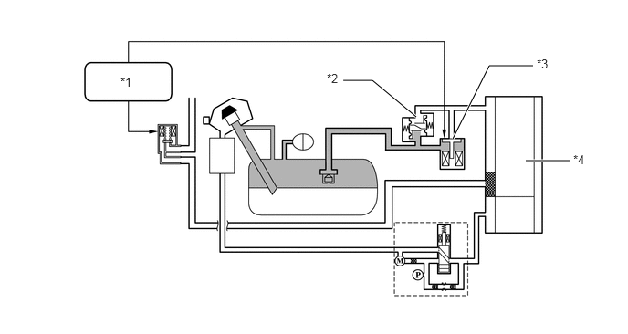
| *1 | ECM | *2 | 燃油出油阀（关闭） |
| *3 | 燃油蒸汽防漏阀（燃油箱主电磁阀总成）（关闭） | *4 | 炭罐 |
等待加油
操作加注口盖开启开关时，ECM 打开燃油蒸汽防漏阀（燃油箱主电磁阀总成），让炭罐吸收燃油蒸汽并降低燃油箱总成内的压力。除非燃油箱总成的内部压力下降至接近大气压力，否则燃油加注口盖将不会打开。此外，多信息显示屏上将显示“Please Wait Now Opening”（请等待，正在打开）。
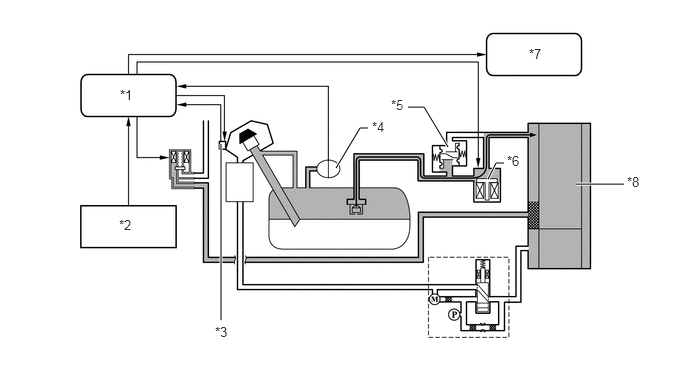
| *1 | ECM | *2 | 燃油加注口盖开启开关（打开） |
| *3 | 带电动机的燃油加注口盖锁总成
·
燃油加注口盖门控灯开关 |
*4 | 燃油箱压力传感器（蒸汽压力传感器） |
| *5 | 燃油出油阀（关闭） | *6 | 燃油蒸汽防漏阀（燃油箱主电磁阀总成）（打开） |
| *7 | 组合仪表总成
·
多信息显示屏 |
*8 | 炭罐 |
加油完毕
燃油箱总成的内部压力下降至接近大气压力时，ECM 打开燃油加注口盖。此时，多信息显示屏上将显示“Refuel Ready”（加油完毕）。由于加油期间 ECM 会使燃油蒸汽防漏阀（燃油箱主电磁阀总成）保持打开，因此加油期间产生的燃油蒸汽会通过燃油蒸汽防漏阀（燃油箱主电磁阀总成）被炭罐吸收。加油后关闭燃油加注口盖时，燃油蒸汽防漏阀（燃油箱主电磁阀总成）会关闭以密封燃油箱总成。
燃油加注口盖打开后经过 30 分钟时，即使未关闭燃油加注口盖，ECM 也会关闭燃油蒸汽防漏阀（燃油箱主电磁阀总成）以密封燃油箱总成，从而防止燃油蒸汽溢出。
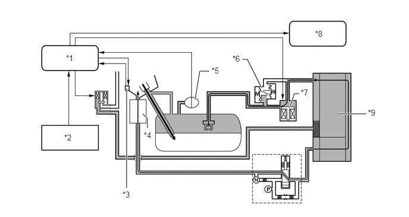
| *1 | ECM | *2 | 燃油加注口盖开启开关（打开） |
| *3 | 带电动机的燃油加注口盖锁总成（打开）
·
燃油加注口盖门控灯开关 |
*4 | 炭罐滤清器 |
| *5 | 燃油箱压力传感器（蒸汽压力传感器） | *6 | 燃油出油阀（关闭） |
| *7 | 燃油蒸汽防漏阀（燃油箱主电磁阀总成）（打开） | *8 | 组合仪表总成
·
多信息显示屏 |
| *9 | 炭罐 | - | - |
燃油加注口盖开启警告
如果燃油加注口盖打开时满足下列任一条件，则 ECM 将在多信息显示屏上显示警告信息“Close Fuel Lid”（关闭燃油加注口盖）来警告驾驶员。
车速高于 50 km/h (31 mph)。
车辆已行驶 1 km (0.6 mile) 以上。
燃油蒸汽防漏阀（燃油箱主电磁阀总成）打开后经过 30 分钟。
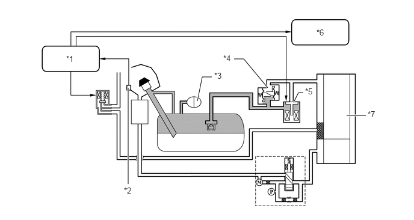
| *1 | ECM | *2 | 带电动机的燃油加注口盖锁总成（打开）
·
燃油加注口盖门控灯开关 |
| *3 | 燃油箱压力传感器（蒸汽压力传感器） | *4 | 燃油出油阀（关闭） |
| *5 | 燃油蒸汽防漏阀（燃油箱主电磁阀总成）（关闭） | *6 | 组合仪表总成
·
多信息显示屏 |
| *7 | 炭罐 | - | - |
清污气流控制
发动机达到预定参数（闭环、发动机冷却液温度高于 70°C (162°F) 等）时，ECM 打开清污 VSV 时将存储的燃油蒸汽从炭罐除去。ECM 改变清污 VSV 的占空比，以控制清污气流流量。清污气流流量取决于进气歧管压力和清污 VSV 的占空比。允许大气压力进入炭罐，以确保清污真空施加到炭罐时连续保持清污气流。
由于采用了燃油蒸汽存储系统，根据燃油箱总成的内部压力，清污气流控制通过下列 2 种模式进行控制。
如果燃油箱总成的内部压力接近大气压力，则即使清污 VSV 打开，ECM 也不会打开燃油蒸汽防漏阀（燃油箱主电磁阀总成）。此时，炭罐吸收的燃油蒸汽会被抽到发动机内并燃烧。
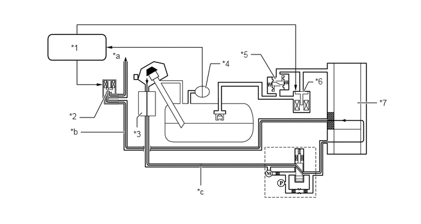
| *1 | ECM | *2 | 清污 VSV（打开） |
| *3 | 炭罐滤清器 | *4 | 燃油箱压力传感器（蒸汽压力传感器） |
| *5 | 燃油出油阀（关闭） | *6 | 燃油蒸汽防漏阀（燃油箱主电磁阀总成）（关闭） |
| *7 | 炭罐 | - | - |
| *a | 至进气歧管 | *b | 清污管路 |
| *c | 新鲜空气管路 | - | - |
如果燃油箱总成的内部压力高且清污阀打开，则 ECM 打开燃油蒸汽防漏阀（燃油箱主电磁阀总成）以释放燃油箱总成内的压力。此时，炭罐吸收的燃油蒸汽会通过进气真空抽到发动机内并燃烧。
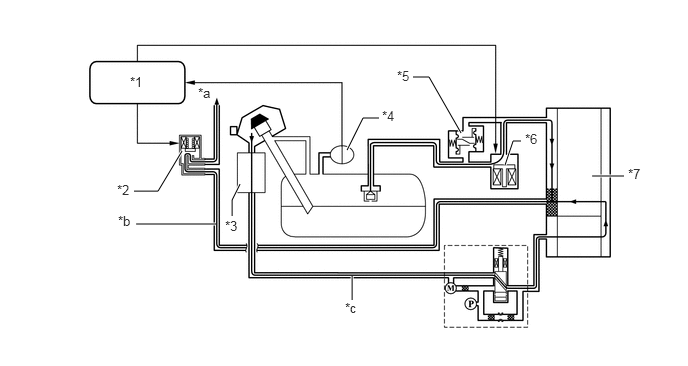
| *1 | ECM | *2 | 清污 VSV（打开） |
| *3 | 炭罐滤清器 | *4 | 燃油箱压力传感器（蒸汽压力传感器） |
| *5 | 燃油出油阀（关闭） | *6 | 燃油蒸汽防漏阀（燃油箱主电磁阀总成）（打开） |
| *7 | 炭罐 | - | - |
| *a | 至进气歧管 | *b | 清污管路 |
| *c | 新鲜空气管路 | - | - |
EVAP 泄漏检查
以下为进行燃油蒸汽排放泄漏检查所需的典型条件：
|
*：如果发动机冷却液温度未降到 35°C (95°F) 以下，时间会延长至 7 小时。此后，如果温度不低于 35°C (95°F)，则时间延长至 9.5 小时。 |
|
| 典型启动条件 | ·
关闭发动机后经过 5 小时*。 ·
海拔：低于 2,400 m (8,000 ft.) ·
辅助蓄电池电压：10.5 V 或更高 ·
电源开关：OFF ·
发动机冷却液温度：4.4 和 35°C（40 和 95°F）之间 ·
进气温度：4.4 和 35°C（40 和 95°F）之间 |
炭罐泵模块执行燃油蒸汽排放泄漏检查。此检查在发动机关闭后约 5 小时进行。可能持续几分钟听到来自行李箱下方的声音。该声音并不表示存在故障。
ECM 通过 2 种判断方法执行燃油蒸汽排放泄漏检查。
燃油箱总成的内部压力等于大气压力时：
ECM 激活泄漏检测泵以将真空引入 EVAP 系统管和炭罐，从而检查泄漏情况和零件功能。
ECM 激活泄漏检测泵并打开燃油蒸汽防漏阀（燃油箱主电磁阀总成）以将真空引入燃油箱总成，从而检查燃油箱总成是否泄漏，并确定燃油蒸汽防漏阀（燃油箱主电磁阀总成）是否卡在关闭位置。
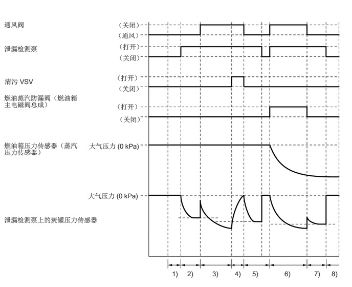
| 顺序 | 操作 | 描述 | 时间 |
|---|---|---|---|
| 1) | 大气压力测量 | ECM 关闭通风阀（通风）并测量燃油蒸汽排放控制系统压力以存储大气压力。 | 60 秒 |
| 2) | 第一参考压力测量 | 泄漏检测泵通过标准节流孔产生负压（真空）。ECM 将此用作第一参考压力。 | 360 秒 |
| 3) | EVAP 泄漏检查 | 泄漏检测泵产生负压（真空）以检查炭罐的泄漏情况。如果稳定压力高于第一参考压力，则 ECM 确定燃油蒸汽排放控制系统存在泄漏。如果在 15 分钟内压力未稳定，则 ECM 取消燃油蒸汽排放控制系统监控。 | 15 分钟内 |
| 4) | 清污 VSV 监控 | ECM 打开清污 VSV 并监控泄漏检测泵产生的真空。如果压力变化大（压力从真空变为接近大气压力），则 ECM 确定清污 VSV 工作正常。 | 10 秒 |
| 5) | 第二参考压力测量 | 首先，泄漏检测泵通过标准节流孔产生负压（真空）。ECM 将此用作第二参考压力。然后，ECM 关闭泄漏检测泵并测量压力，以存储大气压力。 | 60 秒和 5 秒 |
| 6) | 燃油蒸汽防漏阀（燃油箱主电磁阀总成）卡在关闭位置判断和燃油箱泄漏判断 | 燃油蒸汽防漏阀（燃油箱主电磁阀总成）打开时，泄漏检测泵在燃油箱总成内产生负压（真空），此时，ECM 测量压力。 | 15 分钟内 |
| 7) | 第三参考压力测量 | 泄漏检测泵通过标准节流孔产生负压（真空）。ECM 将此用作第三参考压力。 | 60 秒 |
| 8) | 最终检查 | ECM 测量大气压力并记录监控结果。 | - |
燃油箱总成的内部压力高于或低于大气压力时：
如果燃油箱总成的内部压力高或低，则 ECM 根据燃油箱总成内部压力的保持状态确定燃油箱总成内无泄漏。
ECM 激活泄漏检测泵以将真空引入 EVAP 系统管和炭罐，从而检查泄漏情况和零件功能。
泄漏检测泵停止时，ECM 打开燃油蒸汽防漏阀（燃油箱主电磁阀总成）以将燃油箱总成内的压力引入 EVAP 系统管和炭罐，从而确定燃油蒸汽防漏阀（燃油箱主电磁阀总成）是否卡在关闭位置。
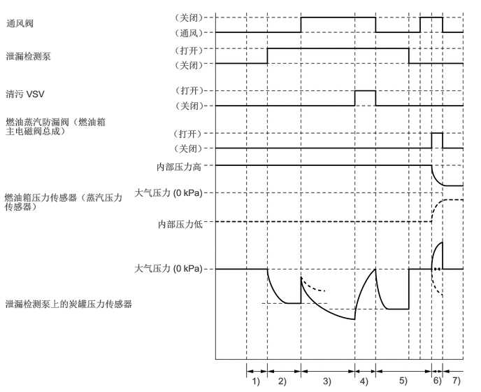
| 顺序 | 操作 | 描述 | 时间 |
|---|---|---|---|
| 1) | 大气压力测量 | ECM 关闭通风阀（通风）并测量燃油蒸汽排放控制系统压力以存储大气压力。 | 60 秒 |
| 2) | 第一参考压力测量 | 泄漏检测泵通过标准节流孔产生负压（真空）。ECM 将此用作第一参考压力。 | 360 秒 |
| 3) | EVAP 泄漏检查 | 泄漏检测泵产生负压（真空）以检查炭罐的泄漏情况。如果稳定压力高于第一参考压力，则 ECM 确定燃油蒸汽排放控制系统存在泄漏。如果在 15 分钟内泄漏检测泵压力未稳定，则 ECM 取消燃油蒸汽排放控制系统监控。 | 15 分钟内 |
| 4) | 清污 VSV 监控 | ECM 打开清污 VSV 并监控泄漏检测泵产生的真空。如果压力变化大（压力从真空变为接近大气压力），则 ECM 确定清污 VSV 阀工作正常。 | 10 秒 |
| 5) | 第二参考压力测量 | 首先，泄漏检测泵通过标准节流孔产生真空。ECM 将此用作第二参考压力。然后，ECM 关闭泄漏检测泵并测量压力，以存储大气压力。然后，通风阀切换至打开位置（通风）。 | 60 秒和 5 秒 |
| 6) | 燃油蒸汽防漏阀（燃油箱主电磁阀总成）卡在关闭位置判断 | ECM 利用燃油箱总成内的预存压力或真空监控燃油蒸汽防漏阀（燃油箱主电磁阀总成）打开时的压力。 | 0.1 秒 |
| 7) | 最终检查 | ECM 测量大气压力并记录监控结果。 | - |
大气压力测量
将电源开关置于 OFF 位置时，清污 VSV 和燃油蒸汽防漏阀（燃油箱主电磁阀总成）切断（关闭）。因此，大气压力引入至炭罐。
ECM 使用炭罐压力传感器提供的信号测量大气压力。
如果测量值不在标准范围内，则 ECM 激活泄漏检测泵以监控压力变化。
如果 ECM 未检测到压力变化，则会停止泄漏检查并在存储器中存储 DTC（诊断故障码）。
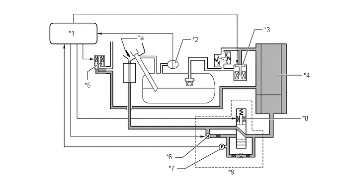
| *1 | ECM | *2 | 燃油箱压力传感器（蒸汽压力传感器） |
| *3 | 燃油蒸汽防漏阀（燃油箱主电磁阀总成）（关闭） | *4 | 炭罐 |
| *5 | 清污 VSV（关闭） | *6 | 泄漏检测泵（关闭） |
| *7 | 炭罐压力传感器 | *8 | 通风阀（通风位置） |
| *9 | 炭罐泵模块 | - | - |
| *a | 大气 | - | - |
在下列时间点测量大气压力：
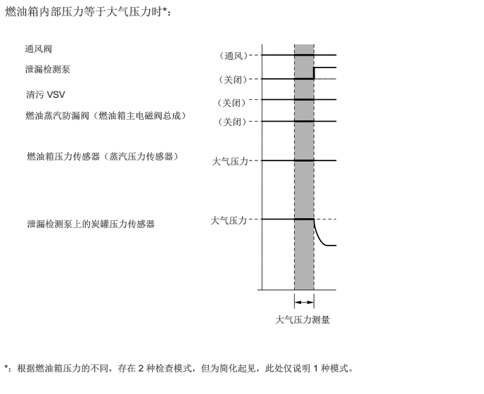
第一参考压力测量
ECM 关闭将大气压力引入炭罐的通风阀（通风），并激活泄漏检测泵，以产生负压。
此时，由于进入标准节流孔的大气压力，因此压力不会下降至超过一定水平。
ECM 将逻辑值与该压力进行比较，并将测得的压力存储为第一参考压力。
如果测量值低于标准值（真空过量），则 ECM 确定标准节流孔阻塞，并在存储器中存储 DTC。
如果测量值高于标准值（压力过高，真空不足），则 ECM 确定高流率压力通过标准节流孔，并在存储器中存储 DTC。
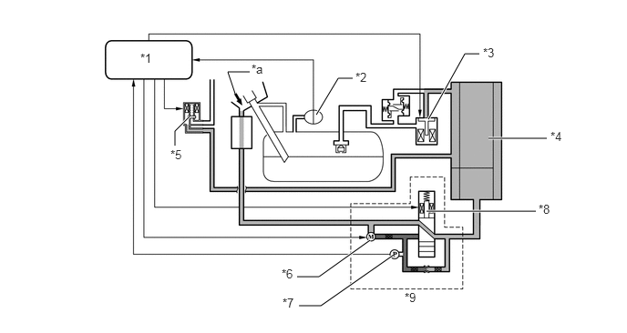
| *1 | ECM | *2 | 燃油箱压力传感器（蒸汽压力传感器） |
| *3 | 燃油蒸汽防漏阀（燃油箱主电磁阀总成）（关闭） | *4 | 炭罐 |
| *5 | 清污 VSV（关闭） | *6 | 泄漏检测泵（打开） |
| *7 | 炭罐压力传感器 | *8 | 通风阀（通风位置） |
| *9 | 炭罐泵模块 | - | - |
| *a | 大气 | - | - |
第一参考压力测量的时间如下：
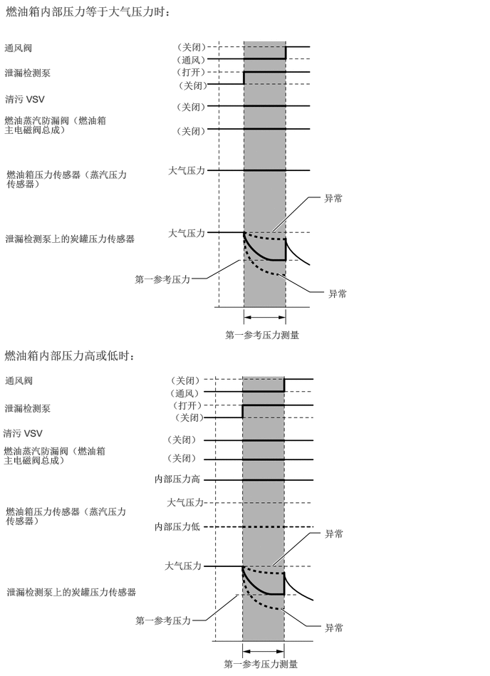
EVAP 泄漏检查
激活泄漏检测泵的同时，ECM 打开通风阀（关闭通风）以将真空引入炭罐（如下所示关闭燃油蒸汽防漏阀（燃油箱主电磁阀总成））。
系统中的压力稳定时，ECM 将此压力与第一参考压力进行比较，以确定是否存在泄漏。
如果检测值低于第一参考压力，则 ECM 确定无泄漏。
如果检测值高于第一参考压力且接近大气压力，则 ECM 确定存在大量泄漏并在存储器中存储 DTC。
如果检测值高于第一参考压力但仍低于大气压力，则 ECM 确定存在少量泄漏并在存储器中存储 DTC。
燃油箱内部压力等于大气压力时，如果燃油箱压力传感器（蒸汽压力传感器）值存在波动，则 ECM 确定燃油蒸汽防漏阀（燃油箱主电磁阀总成）卡在打开位置并在存储器中存储 DTC。
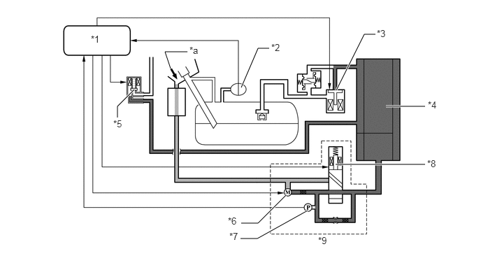
| *1 | ECM | *2 | 燃油箱压力传感器（蒸汽压力传感器） |
| *3 | 燃油蒸汽防漏阀（燃油箱主电磁阀总成）（关闭） | *4 | 炭罐 |
| *5 | 清污 VSV（关闭） | *6 | 泄漏检测泵（打开） |
| *7 | 炭罐压力传感器 | *8 | 通风阀（通风关闭） |
| *9 | 炭罐泵模块 | - | - |
| *a | 大气 | - | - |
EVAP 泄漏检查的时间如下：
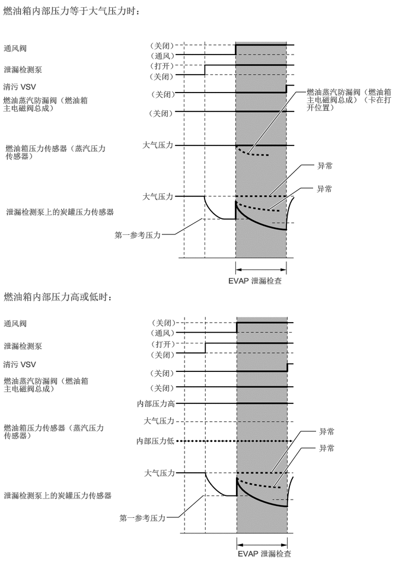
清污 VSV 监控
完成 EVAP 泄漏检查后，在泄漏检测泵激活时 ECM 打开清污 VSV（打开），并将大气压力从进气歧管引入炭罐。
如果此时压力变化在正常范围内，则 ECM 确定其为正常情况。
如果压力变化超出正常范围，则 ECM 将停止清污 VSV 监控并在存储器中存储 DTC。
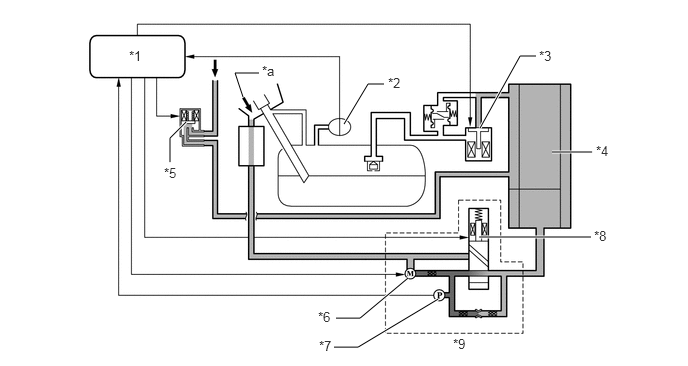
| *1 | ECM | *2 | 燃油箱压力传感器（蒸汽压力传感器） |
| *3 | 燃油蒸汽防漏阀（燃油箱主电磁阀总成）（关闭） | *4 | 炭罐 |
| *5 | 清污 VSV（打开） | *6 | 泄漏检测泵（打开） |
| *7 | 炭罐压力传感器 | *8 | 通风阀（通风关闭） |
| *9 | 炭罐泵模块 | - | - |
| *a | 大气 | - | - |
清污 VSV 监控的时间如下：
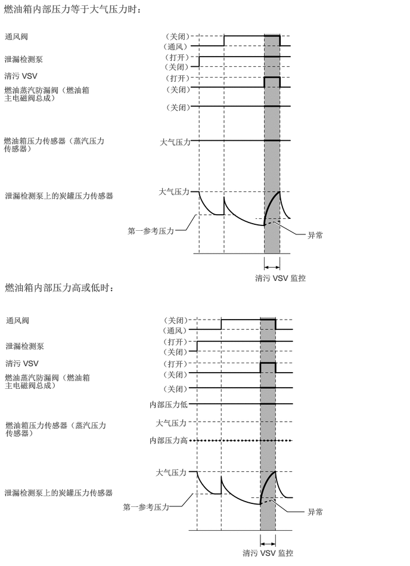
燃油蒸汽防漏阀（燃油箱主电磁阀总成）卡在关闭位置判断和燃油箱泄漏检查
燃油箱内部压力等于大气压力时
ECM 激活泄漏检测泵并打开通风阀（通风关闭）和燃油蒸汽防漏阀（燃油箱主电磁阀总成）（阀打开），以将真空引入燃油箱总成、管和炭罐。
系统中的压力稳定时，ECM 将此压力与第一参考压力进行比较，以确定是否存在泄漏。
如果检测值低于第一参考压力，则 ECM 确定无泄漏。
如果检测值高于第一参考压力且接近大气压力，则 ECM 确定存在大量泄漏并在存储器中存储 DTC。
如果检测值高于第一参考压力但仍低于大气压力，则 ECM 确定存在少量泄漏并在存储器中存储 DTC。
此时，如果燃油箱压力传感器（蒸汽压力传感器）值无波动，则 ECM 确定燃油蒸汽防漏阀（燃油箱主电磁阀总成）卡在关闭位置并在存储器中存储 DTC。
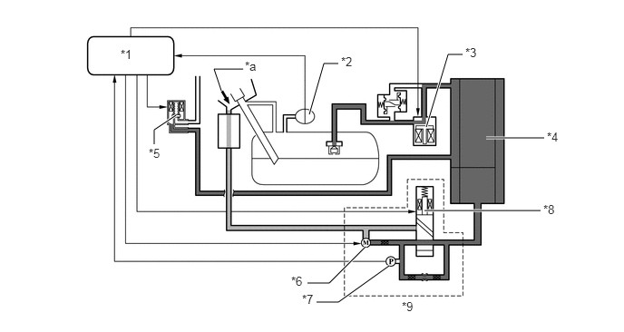
| *1 | ECM | *2 | 燃油箱压力传感器（蒸汽压力传感器） |
| *3 | 燃油蒸汽防漏阀（燃油箱主电磁阀总成）（打开） | *4 | 炭罐 |
| *5 | 清污 VSV（关闭） | *6 | 泄漏检测泵（打开） |
| *7 | 炭罐压力传感器 | *8 | 通风阀（通风关闭） |
| *9 | 炭罐泵模块 | - | - |
| *a | 大气 | - | - |
燃油箱泄漏检查的时间如下：
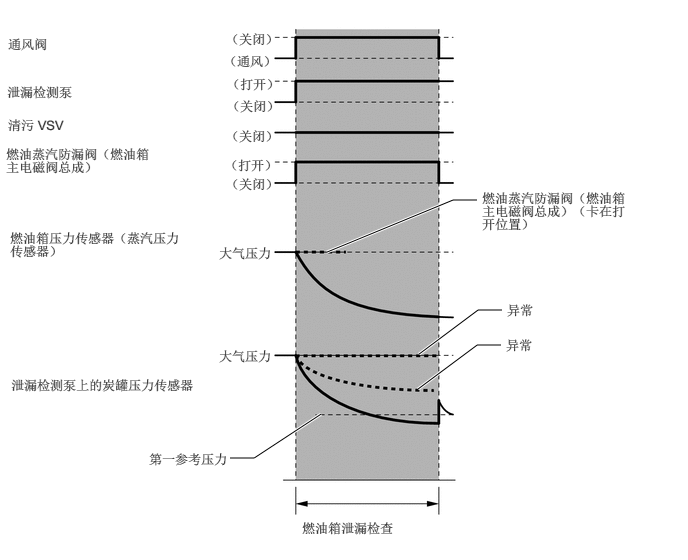
燃油箱内部压力高于或低于大气压力时
如果燃油箱总成的内部压力高或低，则 ECM 确定燃油箱总成无泄漏。因此，仅需确定燃油蒸汽防漏阀（燃油箱主电磁阀总成）是否卡在关闭位置，无需执行燃油箱泄漏检查。
泄漏检测泵停止时，ECM 打开燃油蒸汽防漏阀（燃油箱主电磁阀总成）（阀打开），以将燃油箱总成的内部压力引入管和炭罐。
ECM 使用炭罐压力传感器提供的信号测量大气压力。
如果炭罐压力传感器检测的值保持在规定范围内，则 ECM 确定燃油蒸汽防漏阀（燃油箱主电磁阀总成）卡在关闭位置并在存储器中存储 DTC。
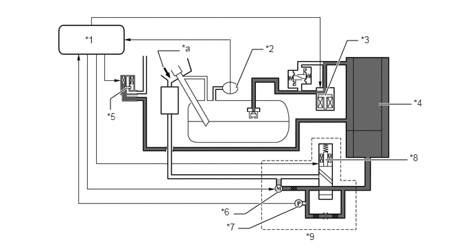
| *1 | ECM | *2 | 燃油箱压力传感器（蒸汽压力传感器） |
| *3 | 燃油蒸汽防漏阀（燃油箱主电磁阀总成）（打开） | *4 | 炭罐 |
| *5 | 清污 VSV（关闭） | *6 | 泄漏检测泵（关闭） |
| *7 | 炭罐压力传感器 | *8 | 通风阀（通风关闭） |
| *9 | 炭罐泵模块 | - | - |
| *a | 大气 | - | - |
燃油蒸汽防漏阀（燃油箱主电磁阀总成）卡在关闭位置检查的时间如下：
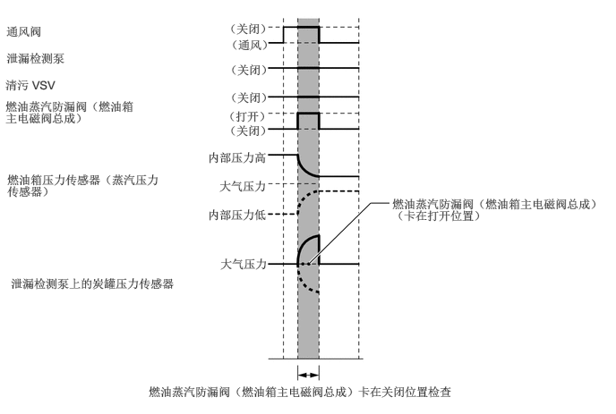